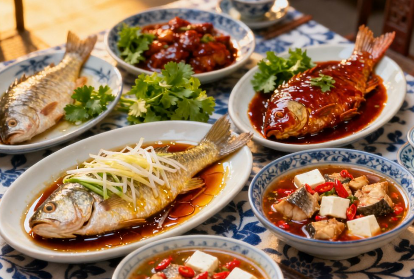
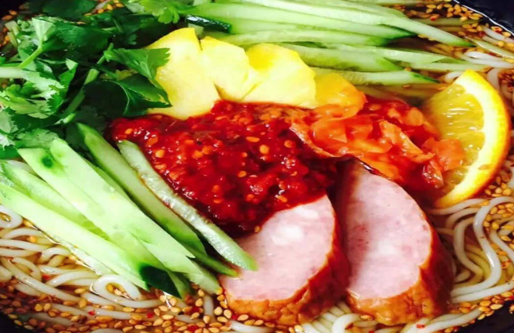
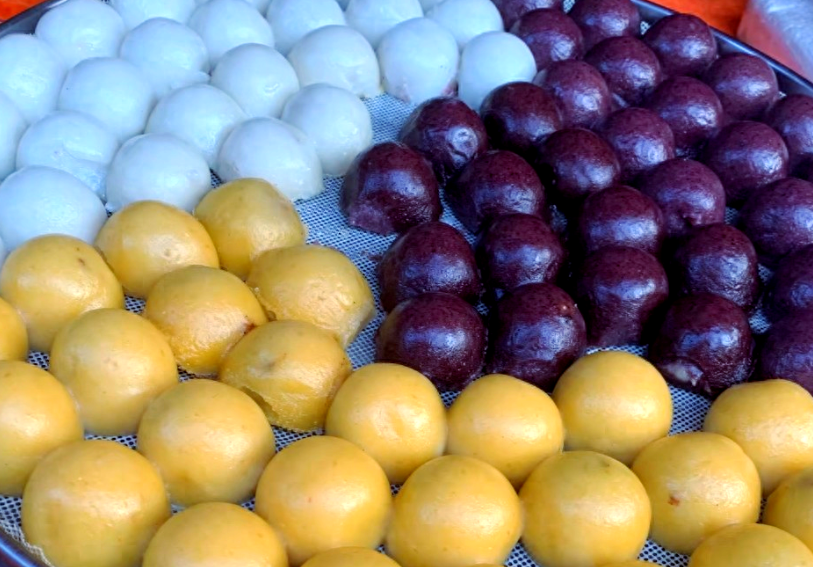
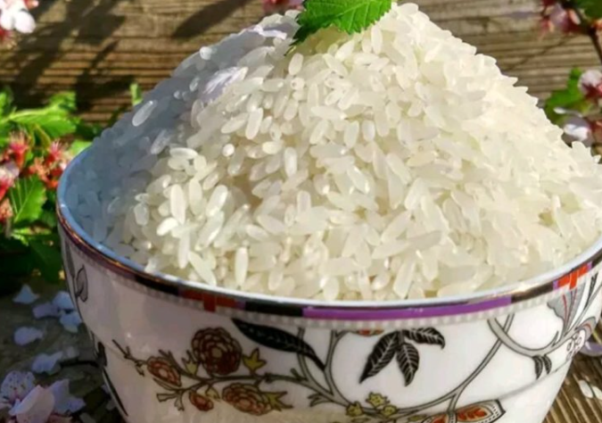
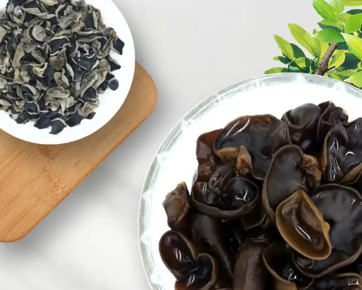
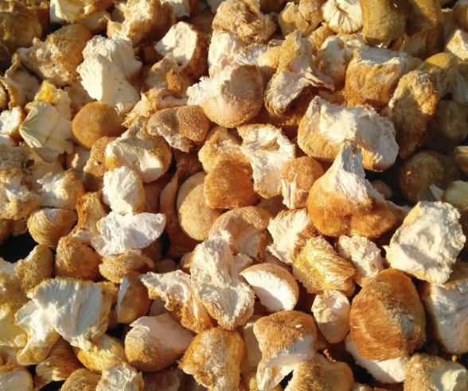

Jingpo Lake is rich in freshwater fish including bighead carp, crucian carp, and common carp. The fish feast features fresh catches prepared through various cooking methods such as stewing, boiling, frying, and grilling. The braised bighead carp is the signature dish, known for its tender meat and rich flavor.

Mudanjiang's Korean cold noodles are made from buckwheat or wheat flour, served with beef broth, kimchi, egg, and pear slices. The sweet-and-sour broth paired with chewy noodles makes it a signature summer delicacy in the region.

Sticky Bean Buns are a traditional Mudanjiang delicacy made with glutinous rice dough and red bean paste filling. After steaming, they have a soft, sticky, and sweet texture. They can be eaten directly or pan-fried for a crispy exterior, serving as a signature winter staple food in Northeast China.

Xiangshui Rice is produced in Bohai Town, Ning'an City. Grown on volcanic lava platforms and irrigated with mineral water from Jingpo Lake, the rice grains are plump and aromatic. It is a China Geographical Indication product, prized for its exceptional quality.

Dongning City is known as the "Hometown of Chinese Black Fungus." Dongning black fungus is renowned for its thick texture, excellent taste, and rich nutritional value. It is a major specialty of Mudanjiang, sold both domestically and internationally.

Hailin City is known as the "Hometown of Chinese Monkey Head Mushroom." This precious edible fungus features tender meat and rich nutrition, earning the saying "Mountain treasure monkey head, sea delicacy bird's nest." It can be used in soups, stir-fries, or processed into dried products.